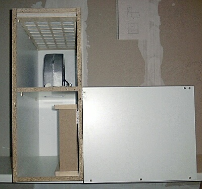

Make Your Own Portable Laminar Flow Hood

You can make your own portable laminar flow hood from a Vacuum Cleaner, some plexiglass, and a HEPA Filter. A thorough article on instructables walks you through the process. The authors paid $200 in parts for their laminar flow hood, including the vacuum cleaner.
If you are worried about achieving actual laminar air flow, you can achieve that as well with the right choice of HEPA filter and blower. A terrific technical write up also exists at this extremely sparse website by Thomas Ederer. There is also a brief write up by G.W. Forister and D.W. Burger from UC Davis on how they constructed theirs. These resources are less step by step, but at points offer more technical explanations.